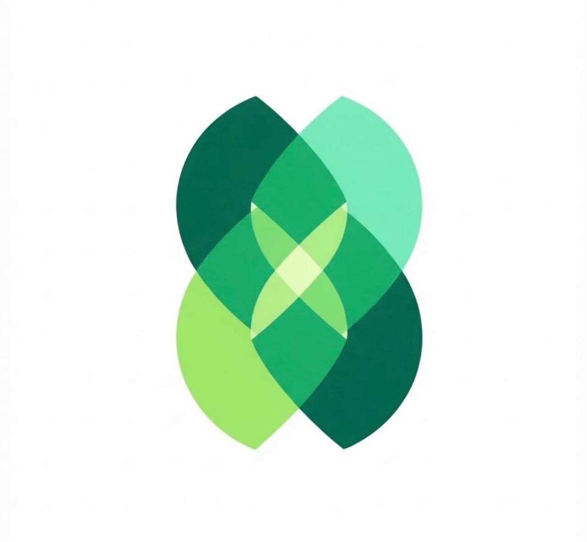

يوم العيادة، من غير لخبطة.
مواعيد الأطباء والكراسي، ملف المريض والجلسات في تسلسل واحد يسهل متابعته.

planora. اطلب عرضًانظام واحد لعيادة أسنان أكثر تنظيمًا
من أول حجز الموعد لآخر متابعة علاجية، Planora بتجمع ملف المريض، مخطط الأسنان، علاقات العملاء والعمليات المالية في مساحة واحدة.
مصممة من البداية لطريقة شغل عيادات الأسنان
منصة مبنية حول يومك
خلي فريق الاستقبال، الطبيب والإدارة على نفس الصورة؛ من رحلة المريض إلى تشغيل العيادة.
مواعيد الأطباء والكراسي، ملف المريض والجلسات في تسلسل واحد يسهل متابعته.
تابع رحلة المريض، الاستفسارات والتذكيرات لتبقى كل محادثة في سياقها.
فواتير ومدفوعات ومصروفات وتقارير تشغيلية تساعدك تاخد قرارات بثقة.
مخطط أسنان تفاعلي
اختار سن من المخطط وشوف إزاي ممكن تربط الملاحظات وخطة العلاج بالسن المقصود، بدل ما تضيع وسط الملف كله.
البيانات في التجربة توضيحية وليست سجلات مرضى حقيقية.
التعديلات التجريبية تُحفظ في هذا المتصفح فقط.
من الاستقبال للمتابعة
رتّب المواعيد وشوف جدول الفريق وحالة الحجز.
دوّن ملاحظات كل سن وخطوات العلاج المرتبطة به.
تابع المدفوعات والتذكيرات ونتيجة رحلة المريض.
أسئلة مهمة
الفكرة مناسبة للعيادة الفردية أو لفريق بعدة أطباء وكراسي. تفاصيل الصلاحيات والفروع تُحدد عند بناء النظام الكامل.
المخطط المعروض تجربة توضيحية. الملاحظات التي تدخلها تُحفظ في هذا المتصفح فقط؛ تسجيل ملفات المرضى الحقيقية يحتاج نظامًا خلفيًا وحسابات آمنة.
نعم، الصفحة وتجربة مخطط الأسنان مصممتان لتعملا باللمس وعلى الشاشات الصغيرة.
لنتحدث عن عيادتك
بيانات التواصل هنا تجريبية لحين اعتماد البريد الرسمي ووسيلة الحجز.
PLANORA · DENTAL PRACTICE, IN SYNC